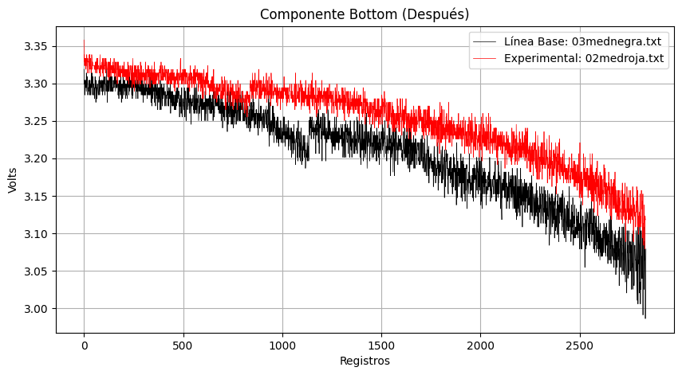

Mis Proyectos

Análisis Temporal de la Actividad Sísmica en México
Este proyecto utiliza datos del Servicio Sismológico Nacional para explorar la actividad sísmica en México a lo largo del tiempo. A través de Python y bibliotecas como Pandas y Matplotlib, se analizan tendencias anuales y mensuales, se visualizan las zonas con mayor actividad sísmica y se filtran los sismos más fuertes.
Proyecto 2
Un dashboard interactivo desarrollado en Excel para la visualización de KPI. (En proceso de subida.)

 Ver más
Ver más
Proyecto 3
Un modelo predictivo en R para análisis de series temporales de ventas. (En proceso de subida.)
Proyecto 4
Análisis de datos en SQL para gestionar bases de datos en un sistema empresarial. (En proceso de subida.)
Ver más